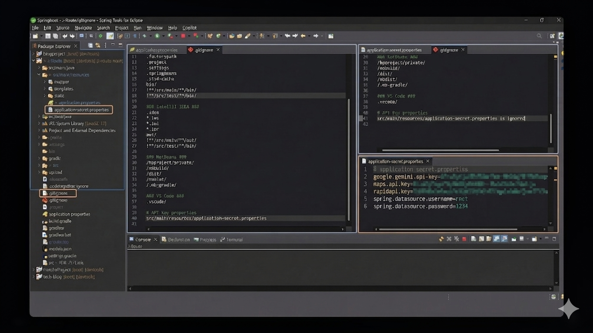

AIベースのカスタマイズ型日本旅行プランナー
生成AIと外部公共APIを融合したインテリジェント・トラベルサービス
既存の旅行アプリは情報は多いですが、「自分だけの日程」を組んでくれない不便さがあります。
AIが最適動線を計画し、リアルタイム気象・Googleマップデータを一箇所で統合提供するワンストッププラットフォーム。
単なるCRUD掲示板を超え、AIが生成したデータをビジネスロジックの中核に据えた設計。ユーザーの入力がAIを通じて構造化された結果に変換され、DBに永続化されます。
Google Maps、Open-Meteo、Gemini AIなど、3種類以上の異種APIを単一のビジネスロジック内で結合・制御する統合アーキテクチャを実装しました。
ユーザー条件(地域/日付/テーマ)に合わせた完全オーダーメイド日程を自動生成
16日間の予報に基づいた天気・服装ガイドを視覚化
Googleマップ連動により、名所・グルメを地図上で直感的に探索
プロジェクト着手前に策定した4大設計成果物です。ボタンをクリックすると、関連ドキュメントを閲覧できます。
本プロジェクトの核心価値である AI 連動全体を設計・実装。単なる API 呼び出しを超え、プロンプトエンジニアリングからデータの永続化まで End-to-End の処理パイプラインを構築。
単一の API 呼び出しではなく、2つの Gemini AI を順次連動させ、精度と品質を段階的に引き上げる独自パイプラインを設計・実装。
地域 / 旅行日数 / テーマ
観光地・グルメ・宿泊先を含む
旅行日程 JSON の生成
「宿泊先を始終点に配置する」
プロンプト条件による動線精製
DTO 逆シリアル化 →
MyBatis でマイページ保存
1回の API 呼び出しに頼らず、2段構成にすることで応答品質を安定させた。AI を「生成器」と「精製器」に役割分離。
AI の自然言語応答を JSON スキーマで強制的に構造化し、DTO にマッピングする End-to-End パイプラインを独力で構築。
AI(Gemini) が自然言語 (文章) で回答するため、ビュー (Thymeleaf) でレンダリングが不可能な問題が発生。定型データの抽出ができず、DB 保存も不可.
プロンプト内で 「必ず指定された JSON 形式のみで応答すること」 を明示的に強制。さらに 「宿泊先が日程の最初と最後になるよう動線を最適化する」 プロンプトチューニングを適用。
単なるリスト出力を超え 地図マーカーとカードがリアルタイムで連動 して反応するインタラクティブな UI を実装。ユーザーが直感的に場所を探索可能。
Google Maps の一部 URL が 700文字以上 に達し、DB INSERT 時に Exception 500 · Data Truncation エラーが発生。
既存のカラム型が VARCHAR(255) で設計されており、保存容量が不十分。
エラーログ分析 → DB スキーマ設計の限界把握 → VARCHAR(255) を TEXT 型 にマイグレーション。
コードレベルでの回避ではなく、DB 層からの完璧な原因究明 及び根本解決。
データベースのロジック設計からフロントエンドとのデータバインディングまで、バックエンド開発を主導しました。
動的SQLによる検索処理と
旅行先データの統合管理
旅行記掲示板のCRUD実装と
権限ベースのロジック処理
統計データのJSON変換及び
エンティティの一括削除処理
外部APIレスポンスの解析と
交通経路データへのマッピング
観光地・宿泊・グルメなど、地域やカテゴリ別に旅行先データを構造化して保存および管理。
新規旅行先の追加から詳細情報の修正、削除まで、データベースを直接管理・運用できるシステムを構築。
ユーザーの検索条件に応じた柔軟なSQLを実行し、必要な情報を正確にリストアップ。
ユーザーレビュー数と平均評価をリアルタイムで集計し、今注目のスポットを即座に算出。
多様な外部の公共・商用APIを一つのUIにシームレスに連携させました。
リアルタイム航空券検索及び
模擬決済システムの連携
Booking.com API基盤
世界中の宿泊施設をリアルタイム検索
Open-Meteoの16日間予報及び
気温に合わせた服装の提案
リアルタイム為替変換及び
ウィッシュリスト連動の予算プランナー
複雑な予算データのバグを修正してUXを向上させるとともに、商用APIキーのGit露出を防ぐ強固なセキュリティパイプラインの構築を主導しました。
予算をすべて登録した後にリロード（F5）すると、追加したリストがすべて初期化（消失）される致命的なUXの欠陥が発生。
サーバー通信の負荷なしに、ブラウザのlocalStorageに予算状態をリアルタイムで保存・同期し、データ保存の問題を完璧に解決。
商用APIの導入時、APIキーがGitに露出することで不正使用や大規模な課金事故（過金爆弾）につながる致命的なセキュリティリスクに直面。
application-secret.propertiesを別途作成してキーを分離し、.gitignoreを徹底して適用することで、流出を源泉から遮断し安全なパイプラインを構築。
現在 API 呼び出し制限 (Rate Limit) の脆弱性が存在。同時接続者の増加に備え、Redis ベースのキャッシング を導入することで、応答速度を 3倍以上改善し、API コストを削減する計画。
機能統合の優先開発によるテストコード不足が主な限界点。 JUnit 5 + Mockito を活用したユニットテスト 及び結合テストの作成により、コードカバレッジ 70% 以上を目標。CI/CD パイプラインとの連携予定。
カカオペイ / トスペイの 実決済モジュールの連動 と、宿泊 · 航空券予約システムの統合を通じて、閲覧プラットフォームから 予約プラットフォーム への進化を目標。
会員登録 ＆ ログイン — Spring Security 認証処理
AI 旅行プランナー — 地域 · 日付 · テーマ入力後、Gemini AI が日程を自動生成
プランナー保存 — 生成された AI 日程をマイページに永続化
グルメ探索 — 目的地周辺のグルメを地図連動で探索
お気に入り登録 — AJAX 非同期ウィッシュリスト登録 (更新なし)
マイページ — 保存された日程 ＆ お気に入りリストの統合確認
J-Route チーム一同 · イ・ジュミョン · チョン・ジェファン · イ・スンウク
💬 Q ＆ A · 質問を歓迎します
開発環境で露出されやすい外部APIキーを安全に管理し、APIの不正利用や過金(Overage)問題を根本的に防止するセキュリティパイプラインを構築しました。

application-secret.propertiesファイルを別途作成し、APIキーを保存。
シークレットファイルがGitに絶対コミットされないように管理。コミット時のキャッシュ削除処理を実施。